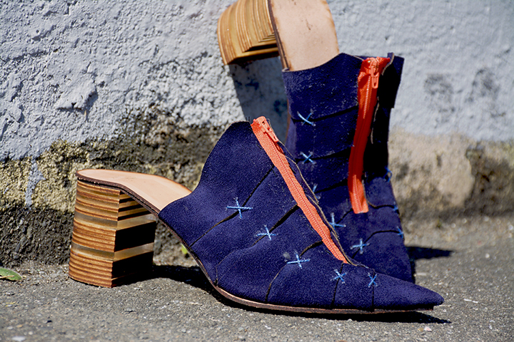
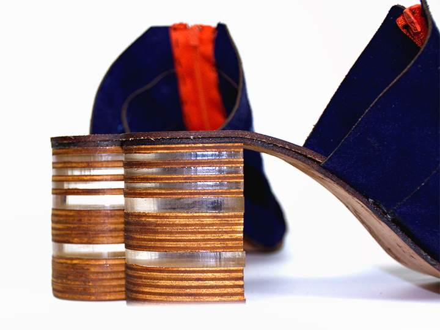
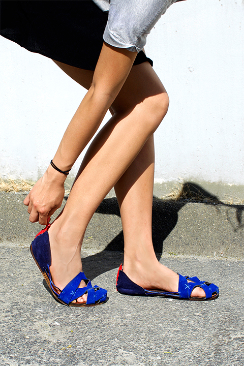
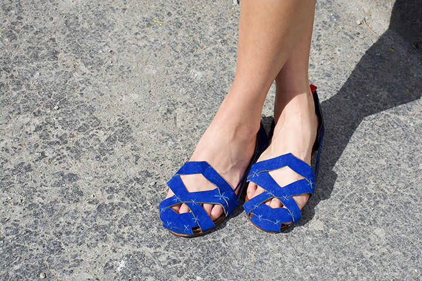

initiatives, intimacy, communication.

What Are Those?
i i c is born based on an ideal relationship.
Through every interaction we slowly build relationships with others. Every interaction we have with others we approach differently, develop different dynamics, and create different energy. It results in different relationships we end up having. For all of them, whether it’s good or bad, positive or negative, stimulating or calm, I realize for every relationship to function properly both party needs to have initiatives, be willing to share intimate insights,and have open communications.
i i c was then created to help others and I to remember what we need to keep in mind when we ours lives cross paths: to always have initiatives, intimacy, and communication in the relationships we build.
Athletic

Utilizing the soles to focus on the ball of the foot and the heel for supporting both Toe-Strike and Heel-Strike running methods. Lace-less with zipper on both sides for an easy taking-on-and-off experience.
The shoes are styled with a distinctive layering and cross stitching pattern as we as a visually stimulating color palette.

Heel

For the dress shoes style, I decided to go with Mules, instead of the traditional high heels for a laid-back, yet still elegant look.
The dress shoes continued with the contrasting color and layering with the cross stitches, as well as the zippers in the front.
For the heels, I chose to make them in layers of wood and acrylic to give it a little twist from the traditional heels but also continuing on the layering them.
Casual
 
The casual style keeps the layering and stitches as the other two styles. The zippers as a reoccurring theme are placed in the back with an accent color.